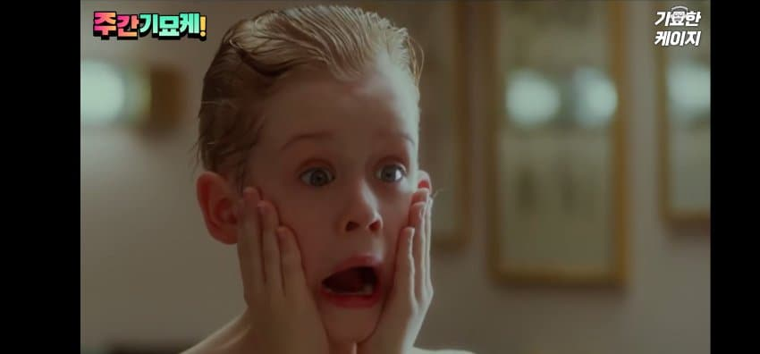
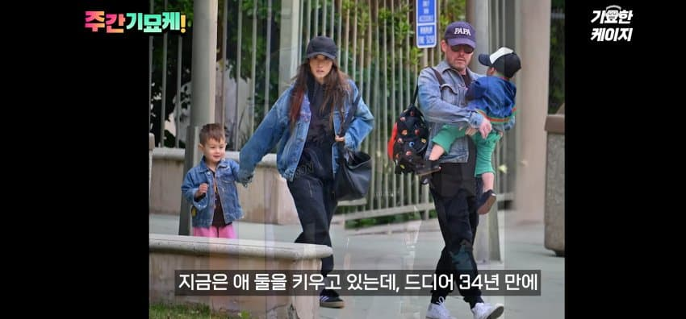
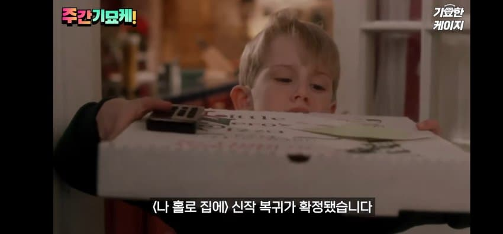
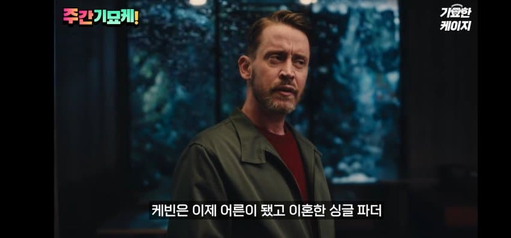
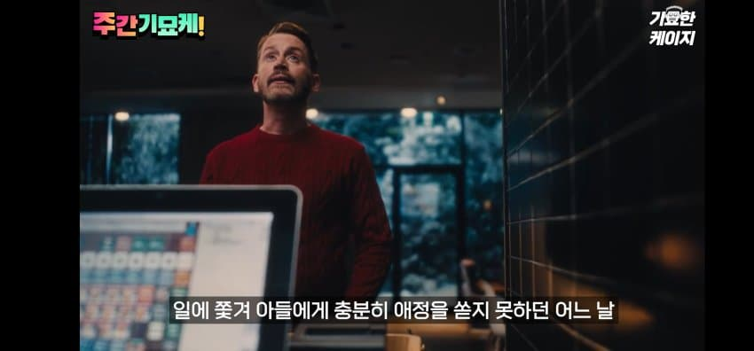
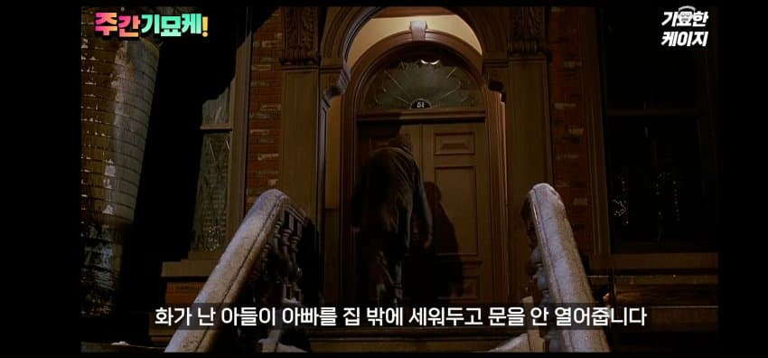
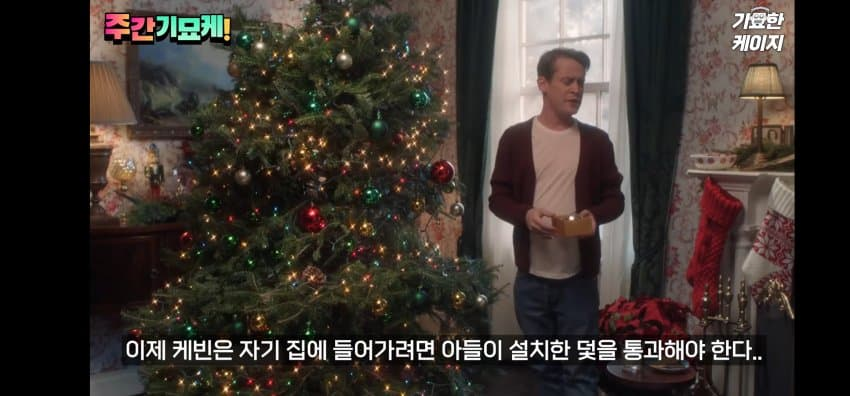
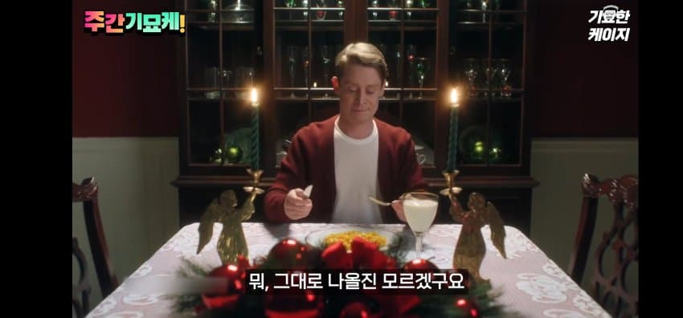
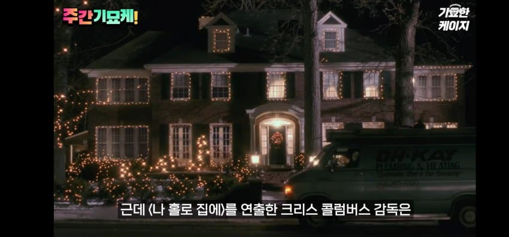
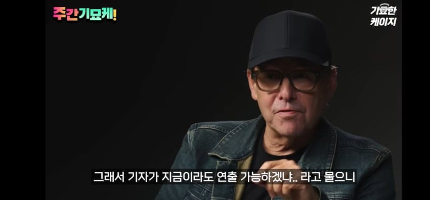
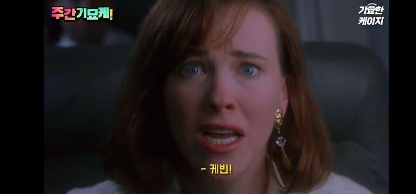
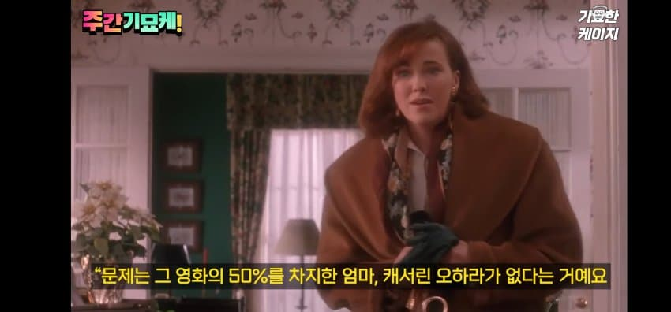
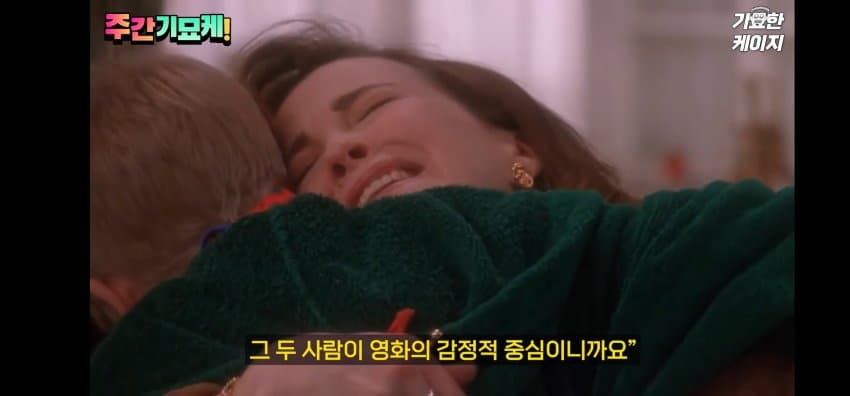
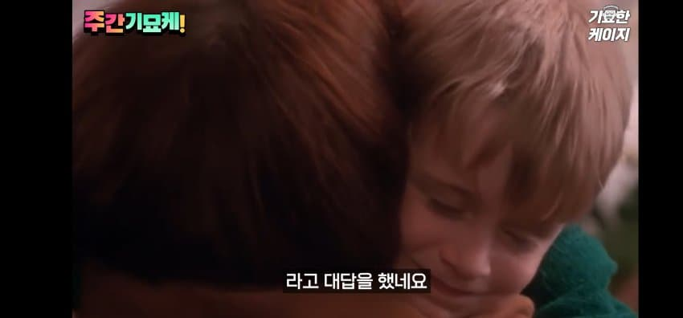
1. 맥컬리 컬킨이 직접 각본에 참여
2. 이혼남으로 나옴.
3. 역디펜스 ㅋㅋ














댓글
수집 당시 댓글 150개
ㅇㅇ · 11.23 01:03:31
· ㅇㅇ · 11.23 01:58:49
노은지 · 11.23 01:04:33
· ㅇㅇ · 11.23 01:05:34
· ㅇㅇ · 11.23 17:50:14
ㅇㅇ · 11.23 01:06:23
씹덕1024일차 · 11.23 01:07:28
· ㅇㅇ · 11.23 01:24:09
· 씹덕1024일차 · 11.23 01:24:41
· ㅇㅇ · 11.23 06:04:13
ㅇㅇ · 11.23 01:08:03
· ㅇㅇ · 11.23 01:09:39
· ㅇㅇ · 11.23 02:16:13
· ㅇㅇ · 11.23 10:14:12
ㅇㅇ · 11.23 01:08:21
ㅇㅇ · 11.23 01:09:24
· ㅇㅇ · 11.23 01:10:01
· ㅇㅇ · 11.23 01:19:17
ㅇㅇ · 11.23 01:11:41
ㅇㅇ · 11.23 01:11:45
· ㅇㅇ · 11.23 01:17:48
· ㅇㅇ · 11.23 01:19:15
· ㅇㅇ · 11.23 01:22:13
· ㅇㅇ · 11.23 13:30:04
· ㅇㅇ · 11.23 18:04:39
ㅇㅇ · 11.23 01:21:53
· ㅇㅇ · 11.23 01:59:55
허니버터시나몬 · 11.23 01:22:49
· 케떡 · 11.23 10:54:38
· ㅇㅇ · 11.23 13:32:39
· ㅇㅇ · 11.23 14:48:50
· ㅇㅇ · 11.23 18:07:41
ㅇㅇ · 11.23 01:24:36
· ㅇㅇ · 11.23 01:24:41
· ㅇㅇ · 11.23 11:33:52
ㅇㅇ · 11.23 01:25:38
· ㅇㅇ · 11.23 01:32:32
· 딸통령 · 11.23 02:07:00
안네의일기 · 11.23 01:29:31
· ㅇㅇ · 11.23 01:56:27
· 안네의일기 · 11.23 06:52:10
· 원갈이 · 11.23 07:00:38
· ㅇㅇ · 11.23 14:45:37
· ㅇㅇ · 11.23 19:00:22
ㅇㅇ · 11.23 01:34:54
· ㅇㅇ · 11.23 04:21:19
필기구 · 11.23 01:37:17
히이잉 · 11.23 01:37:48
PP사비 · 11.23 01:37:58
ㅁㄴㅇㄹ · 11.23 01:38:05
ㅇㅇ · 11.23 02:23:21
ㅇㅇ · 11.23 02:34:37
히이잉 · 11.23 02:43:11
ㅇㅇ · 11.23 02:43:28
2456778 · 11.23 02:57:57
· ㅇㅇ · 11.23 04:21:43
· ㅇㅇ · 11.23 04:44:53
ㅇㅇ · 11.23 03:06:34
ㅇㅇ · 11.23 03:39:43
ㅇㅇ · 11.23 04:44:49
ㅁㄴㅇ · 11.23 05:32:00
ㅇㅇ · 11.23 06:55:26
ㅇㅇ · 11.23 07:30:30
ㅇㅇ · 11.23 07:36:17
autumnchanges · 11.23 07:38:26
ㅇㅇ · 11.23 07:50:18
순수비난 · 11.23 07:53:16
ㅇㅇ · 11.23 08:07:06
ㅇ · 11.23 08:20:42
문재인 · 11.23 08:23:34
· ㅇㅇ · 11.23 09:35:15
· ㅇㅇ · 11.23 10:31:51
ㅇㅇ · 11.23 08:30:36
· ㅇㅇ · 11.23 13:32:07
· ㅇㅇ · 11.23 17:06:14
ㅇㅇ · 11.23 08:55:09
ㅇㅇ · 11.23 09:46:01
ㅇㅇ · 11.23 09:48:50
ㅇㅇ · 11.23 09:53:35
· ㅇㅇ · 11.23 10:36:23
· ㅇㅇ · 11.23 11:37:34
· ㅇㅇ · 11.23 18:01:09
밥쥐 · 11.23 10:06:33
ㅇㅇ · 11.23 10:12:39
ㅇㅇ · 11.23 10:28:33
· ㅇㅇ · 11.23 10:41:17
inspect2631 · 11.23 11:21:42
ㅇㅇ · 11.23 11:28:31
· 풀러리 · 11.23 13:23:17
· ㅇㅇ · 11.23 16:26:35
· ㅇㅇ · 11.23 18:18:16
ㅇㅇ · 11.23 11:36:27
ㅇㅇ · 11.23 12:05:16
ㅇㅇ · 11.23 13:46:36
ㅇㅇ · 11.23 13:47:13
ㅇㅇ · 11.23 13:53:28
ㅇㅇ · 11.23 16:53:08
Air친구 · 11.23 17:03:42
크리스마스
ㅇㅇ · 11.23 17:35:47
srt한요일 · 11.23 19:34:02
코알라코끼리 · 11.22 11:07:05
· ㅇㅇ · 11.22 11:08:23
· 코알라코끼리 · 11.22 11:08:38
삭제됨 · 11.22 11:07:06
· ㅇㅇ · 11.22 11:08:10
· ㅇㅇ · 11.22 11:08:24
· Air친구 · 11.23 17:03:09
ㅇㅇ · 11.22 11:07:32
ㅇㅇ · 11.22 11:09:03
· ㅇㅇ · 11.23 00:53:55
· ㅇㅇ · 11.23 01:57:17
ㅇㅇ · 11.22 11:17:59
ㅇㅇ · 11.22 11:28:03
· ㅇㅇ · 11.23 01:57:24
· ㅇㅇ · 11.23 02:05:37
· ㅇㅇ · 11.23 09:30:06
· ㅇㅇ · 11.23 10:26:26
· ㅇㅇ · 11.23 11:51:20
· ㅇㅇ · 11.23 18:38:23
ㅇㅇ · 11.23 00:45:47
· ㅇㅇ · 11.23 00:53:45
봇치쟝 · 11.23 00:45:58
ㅇㅇ · 11.23 00:48:58
· ㅇㅇ · 11.23 00:56:08
· ㅇㅇ · 11.23 01:02:40
· 노은지 · 11.23 01:05:22
· ㅇㅇ · 11.23 01:26:32
· ㅇㅇ · 11.23 01:30:53
· ㅇㅇ · 11.23 08:34:33
· ㅇㅇ · 11.23 09:31:25
· ㅇㅇ · 11.23 10:55:55
· ㅇㅇ · 11.23 18:47:59
· ㅇㅇ · 11.23 18:51:23
ㅇㅇ · 11.23 00:51:02
· ㅇㅇ · 11.23 00:54:17
ㅇㅇ · 11.23 00:53:07
ㅇㅇ · 11.23 00:53:57
· ㅇㅇ · 11.23 00:55:00
· ㅇㅇ · 11.23 01:15:04
· ㅇㅇ · 11.23 01:57:56
ㅇㅇ · 11.23 00:56:57
· ㅇㅇ · 11.23 16:58:26
ㅇㅇ · 11.23 00:57:22
· 와_정말요 · 11.23 12:10:31
MR4오너 · 11.23 00:58:23
ㅇㅇ · 11.23 00:58:51
ㅇㅇ · 11.23 00:59:26
· ㅇㅇ · 11.23 01:02:33
· 파리생제르망 · 11.23 12:09:57
· ㅇㅇ · 11.23 13:19:49